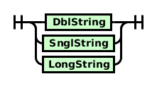

In this section, the non-terminal Digit refers to the characters ‘0’..‘9’, while Letter refers to the ASCII characters ‘a’..‘z’ and ‘A’..‘Z’.
A definition is an entry in a table visible to the compiler, optionally mapping to a value. They can be used as both a way to selectively include code for compilation, or for macro substitution. Unlike other languages, such as C, definitions in OScript do not take any parameters. In addition, while the preprocessor is capable of associating substitutions with definitions, it is unable to perform any logic based on those substitutions.
A preprocessor directive is a line beginning with zero or more whitespace characters, followed by a #, zero or more white space characters, followed by the directive.
There are six preprocessor directives:
Preprocessor Directive:
Name:

name must be a sequence of alphanumerical or underscore characters, which must not lead with a digit. Unlike in old OScript, one cannot use macro substitution to change, if one were fool-hardy enough, the values of integer constants.
define adds a new definition to a global environment, and will persist until the end of the current file, unless undefined first. The definition binds a name to an optional value.
undef will remove a definition from the global environment, if it is present. If the definition is absent, nothing will happen.
ifdef, ifndef, else and endif will optionally include or omit code from being seen by the parser, depending on the state of definitions. Each ifdef must have a corresponding endif, and at most one else. ifndef behaves has similar requirements. ifdefs and ifndefs may be nested.
If and only if name has been defined in the environment does Branch A get included in the source code that is sent to the rest of the compiler. Otherwise, Branch B gets sent. If the else directive and corresponding branch are omitted, then no code is included if name is not defined. If ifndef was used instead of ifdef, then Branch A would be included if and only if name wasn't defined. Otherwise, Branch B would be included.
If a line is not a preprocessor directive, as described here, then it is a candidate for macro substitution. All tokens in the line, that are not enclosed in strings and are not in comments, are compared against known definitions. If a match is found, the token is replaced with the value (if any) corresponding to the definition. Macro substitution is recursively performed on the substituted text.
Macro substitution is non-recursive—if a macro expands to a token that would otherwise lead to recursion, it's left as it is.
This macro substitutes the current line number for __LINE__.
For example:
Echo( "Current line number = " + Str.ValueToString( __LINE__ ) + Str.EOL() )
Output:
Current line number = 42
This directives substitutes the current oscript file name for __FILE__ if running in an oscript file. If it is running in an ospace then the object.function name is substituted
For example:
Echo( "Current File = " + __FILE__ + Str.EOL() )
Outputs:
Current File = test.lxe
If it is running in an ospace function then the object.function name is substituted
For example:
Echo( "Current File = " + __FILE__ + Str.EOL() )
Outputs:
Current File = object:&webdsp[261].Echo
While lexing, if the final non-whitespace character on the line is the line continuation character (\), and the final character is not part of an unclosed string, the line continuation character and the remainder of the line (including any newline characters) are ignored. The result is that newline tokens are not sent to the parser, making multiple lines appear to be a single one.
OScript has two comment styles—end-of-line or C++ style comments, and C-style comments.
An end-of-line comment begins with // and continues until the end of the line.
C-style comments begin with /* and continue until */ is reached. C-style comments cannot be nested—subsequent /* are considered to be part of the comment text, and the comment will end at the first */ encountered.
There are two classes of numerical constants—integer constants and real constants.
Integer:
Real:
OScript allows both double and single quoted strings. Enclosed quotes are escaped by repeating them:
"-""-"
corresponds to the string '-"-', while '-'-' corresponds to "-'-".
These strings may not span lines, and do not have any escape characters. In order to include special characters, e.g. newlines, it's necessary to append an expression evaluating to the character to the string using the + operator.
To address the need of including SQL statements, and documentation in a source file without having to wrap them in a script, the new compiler also supports long strings, which are delimited with the back-tick character (`). These strings extend until they encounter another back-tick, and can span multiple lines. Like with short strings, a double back-tick embeds a literal back-tick into the string.
String:
DblString:
SnglString:
LongString:
An OScript identifier is a letter or underscore, followed by zero or more additional letters, underscores or digits. All identifiers must be composed of ASCII characters.
Identifier
If an identifier matches a keyword, a token corresponding to that keyword is returned instead. The old keywords are:
and |
break |
breakif |
by |
case |
continue |
continueif |
default |
do |
downto |
else |
elseif |
end |
eq |
for |
function |
ge |
goto |
gt |
if |
in |
le |
lt |
ne |
nodebug |
not |
or |
repeat |
return |
switch |
then |
to |
until |
while |
In addition, the new compiler defines the following keywords:
final |
inherits |
interface |
none |
object |
override |
package |
private |
public |
undefined |
using |
Many of these keywords are only considered keywords outside of scripts. Inside of a script, they will behave as identifiers or type names as normal.
Due to the increased number of keywords, plus the need to allow identifiers that contain spaces and other punctuation, the new compiler also supports ‘hash-quotes’ as a way of using arbitrary sequences of characters as an identifier. Hash-quotes look ugly. This is intentional, as a way of discouraging their casual use.
Hash-quote:
An ‘operator’ is a sequence of one or more of the following characters:
| ( | ) | { | } | [ | ] | + | - | * |
| / | = | ^ | . | ! | % | : | ; | , |
| ~ | < | > | & | | | @ | ? | \ | $ |
The lexer will match the longest sequence of consecutive characters that matches a known operator. As such, == will be matched as a single token, rather than two = tokens.
‘Operators’ includes characters such as parentheses and semicolons, as well as more traditional operators such as + or /.
A complete list of current operators:
| @ | ; | ( | ) | [ | ] | { | } | . | $ |
| $$ | , | .. | ... | + | - | * | / | % | ^ |
| | | & | || | && | ^^ | == | != | <> | <= | >= |
| < | > | ~ | ! | << | >> | ? | : | = | += |
| -= | *= | &= | ^= | |= | \ | :: |
Comments are non-executable statements that help the reader of a script more readily discern its purpose. OScript supports two types of comments: ( // ) and the ( /* ... */ ) pair.
The ( // ) comment character defines a single line comment. It can be used on a line by itself or it can follow another statement. For example:
// this is a whole line comment
Integer x = 55 // this is an end-of-line comment
All characters on the line following the comment character are considered to be part of the comment and are, therefore, ignored by the compiler.
The ( /* ... */ ) pair can be used to define a multiple line comment, although both characters can be placed on a single line also. For example:
/*
this is a
multiple line comment
*/
Integer x = 55 /* this is an end-of-line comment */
All characters following the ( /* ) character and preceding the next ( */ ) character are considered to be part of the comment and are, therefore, ignored by the compiler. Multi-line comments do not nest—the comment will end at the first */ regardless of how many /* preceded it.
Comments are optional, but they provide a simple and straightforward method of documenting your script.
OScript is a white-space sensitive language—new-line characters function as end-of-statement markers. Sometimes, however, one wishes a statement to span multiple lines.
Traditionally, this has been achieved by using back slashes (\) as line continuation characters. If the last non-whitespace character on a line is a back slash, the following line is appended to the current line. This process is repeated for each line ending with a line continuation character.
Echo("x", \
"y", \
"z")
If the line needs continuation, and there is an end-of-line comment, the back slash should go before the comment. For example:
Echo("x", \
"y", \// this is the proper place for a comment
"z")
The continuation character cannot be used in the middle of a String declaration. For example:
// error in the following statement:
String s = "The quick brown fox \
jumped over the lazy dog."
// error fixed in the following statement:
String s = "The quick brown fox" + \
"jumped over the lazy dog."
Since CS 10.5, the line continuation character becomes optional in many cases where starting a new statement would be syntactically invalid. As such, continuation characters are no longer necessary in the following circumstances:
()), braces ({) and brackets ([)))) and braces (})In most cases, this will greatly reduce the number of continuation characters needed, while making it easier to write readable code. For instance, the above examples become:
Echo("x",
"y", // this is the proper place for a comment
"z")
String s = "The quick brown fox" +
"jumped over the lazy dog."
In other cases, some small adjustment might be necessary. For instance,
if( conditionA \
&& conditionB \
&& conditionC )
becomes
if( conditionA &&
conditionB &&
conditionC )